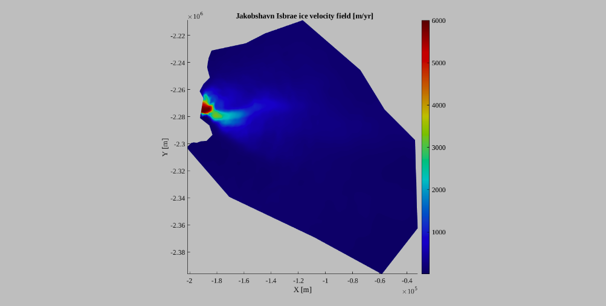
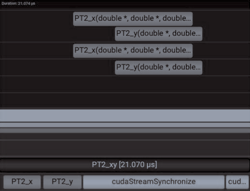

From July 2023 to June 2024, I worked as a Computational Research Intern through the ACCESS MATCH Program, remotely from Orange County, California. My work focused on optimizing GPU-accelerated ice-sheet flow modeling software using NVIDIA Nsight Systems, Compute, and NVTX annotations to profile and analyze performance bottlenecks within CUDA kernels. Through targeted optimizations — removing redundancies, establishing kernel concurrency, and eliminating expensive operations — I reduced overall runtime by approximately 10%. I utilized two Slurm-managed supercomputing clusters, Delta at the National Center for Supercomputing Applications and Jetstream2 at the Pervasive Technology Institute, to compare runtime, grid points, scale, and error values between test cases. I also began a codebase conversion toward a performance-portable, architecture-agnostic implementation using OpenACC. My research findings contributed to narrowing uncertainty in sea level rise prediction to better understand the effects of climate change.
Note: The performance-portable branch I developed remains active and is maintained in a private fork of the public repository, with software development ongoing.
Tools & Languages Used:
- Git
- C++
- CUDA
- Bash
- Slurm
- OpenACC
- Linux CLI
- Open OnDemand
- NVIDIA Nsight, Compute, NVTX